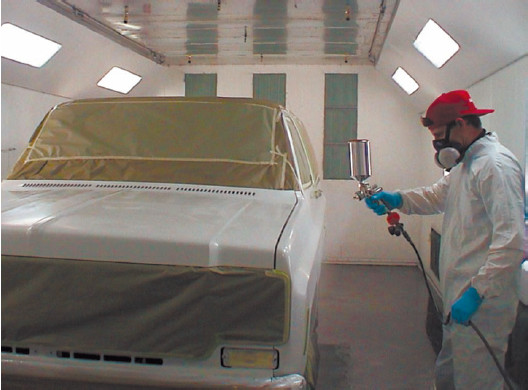

Вопрос: Я приобрел автомобиль, нуждающийся в косметическом ремонте (покраска, химчистка салона и т. д.). Когда я обратился по поводу покраски, мне сказали, что требуется 9 литров краски плюс растворитель и лак. Мне кажется, что краски просят многовато. Но мастера говорят, что для качественной покраски требуется несколько слоев краски и лака, иначе лакокрасочное покрытие быстро облезет. Кто прав?
Ответ: В данном случае правы вы. Да, для получения качественного лакокрасочного покрытия необходимо несколько слоев и краски, и лака. Тем не менее таким количеством краски, как вам сказали, вы можете окрасить не только автомобиль, но еще и свою квартиру (и даже на дачу останется). В среднем на автомобиль стандартных габаритов требуется около 3 литров краски (см. рис.).

Процесс покраски автомобиля
Покраска должна проводиться в специальном помещении - покрасочном боксе. В нем установлены воздушные фильтры, сделана специальная вентиляция сверху-вниз, чтобы во время покраски и высыхания на окрашенную поверхность не попадала пыль.